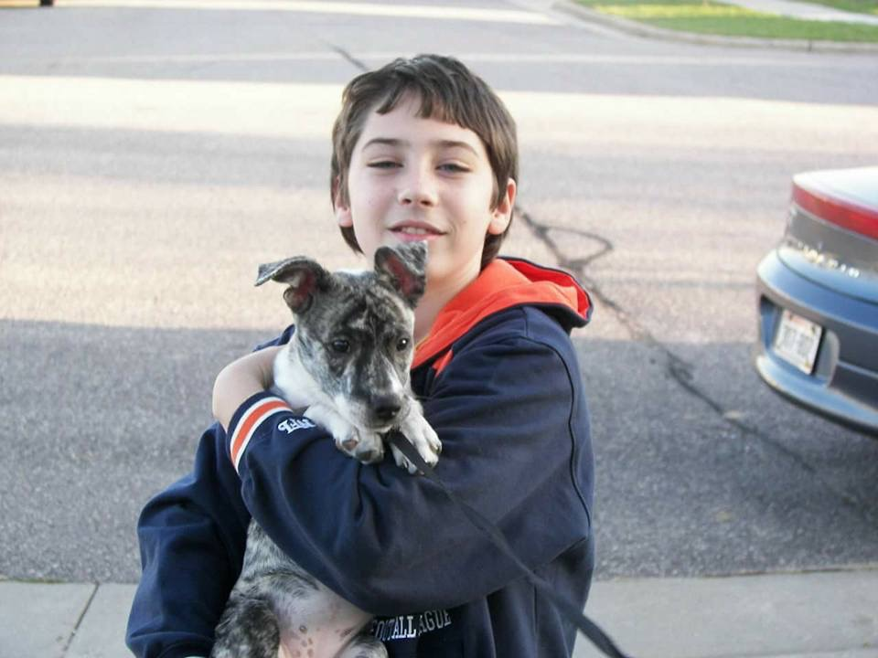

Welcome to the slideshow demo:
This is where you would put some information about the current page. You can put anything here about what is above or below.
This is an image below:
This is the same image, slightly bigger:
That is all I had for this page, onto the next, click up on top, or this text
Here is a list of things I wanted to point on about this page:
- This the second page
- There are 2 pictures and a video in them below
- Another list item
This is a video I wanted to share because:
- I like the clouds
- They are white
- Another list item
- I feel like this is a great video because ...
This is a picture of a cat and I:
This is a picture of a dog:

That is all I had for the second page, onto the last page. Click up on top, or this text
Contact me:
Email: MY-EMAIL@Mailinator.com
Phone: 555-555-5555
This page should be visible on Wjtelliott.Github.IO/SD-Portfolio
Check out my other projects not listed here on My Github Account
That is all I had for the last page. Click up on top, or this text to return to the start